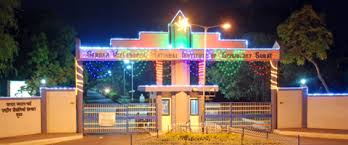

Sardar Vallabhbhai National Institute Of Technology, Surat is one of the 17 Regional Engineering Colleges that were established as
venture of the Government of India and the Government of Gujarat. It was established in June 1961 with facilities to run
Bachelor's Degree Programmes in Civil, Electrical and Mechanical Engineering disciplines.It is now changed to National
Institute of Technology along with other RECs.The college has now been given the status of Deemed University.As
The college has well-established Central Learning resource centers like Central library, Central Computer
Centre, Entrepreneurship Development Cell, Continuing Education Centre and Physical Education Section.
The college also has a very active Training & Placement section.